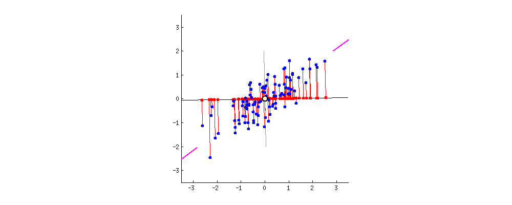
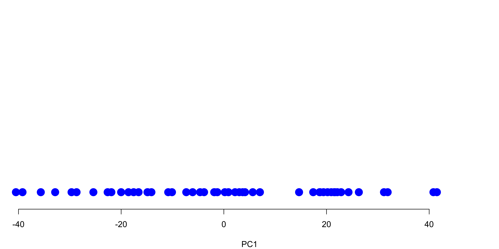
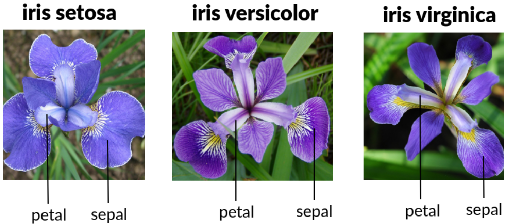

# A tibble: 50 × 1
English
<int>
1 41
2 65
3 55
4 94
5 66
6 85
7 44
8 44
9 67
10 73
# ℹ 40 more rowsPrincipal Component Analysis
MATH/COSC 3570 Introduction to Data Science
Unsupervised Learning
Unsupervised Learning
Supervised Learning: response \(Y\) and features \(X_1, X_2, \dots, X_p\) measured on \(n\) observations.
-
Unsupervised Learning: only features \(X_1, X_2, \dots, X_p\) measured on \(n\) observations.
- Not interested in prediction (no response to be predicted)
- Discover any interesting pattern or relationships among these features.
. . .
-
Dimension reduction for effective data visualization or extracting most important information those features contain.
- plot a bunch of points of \(\boldsymbol{x} = (x_1, x_2, \dots, x_p)\) in a 2-D scatter plot (manifold). (reduce dimension from \(p\) to 2)
- use 2 variables to explain most variations or represents high data density in the \(p\) variables
. . .
-
Clustering discovers unknown subgroups/clusters in data
- find 3 sub-groups of people based on variables income, occupation, age, etc
Background: Dimensions
Going to be very SIMPLE!
. . .
But you’ll be happy I did this.
. . .
Because PCA is about reducing dimensions!
One-Dimension (1D) Number line

- Let’s go back to your first grade. You remember that one-dimension equals a number line.
- Now suppose we have 50 English grades. The first 3 scores are 41, 65, and 55.
- We can plot these values on the number line just like we did in the elementary school.
- 1st student with score 41 it’s a dot at 41, 2nd student with score 65, it’s a dot at 65, and so on.
One-Dimension (1D) Number line: Uniform students
# A tibble: 50 × 1
English
<int>
1 41
2 65
3 55
4 94
5 66
6 85
7 44
8 44
9 67
10 73
# ℹ 40 more rows
- If you plot all students scores, we might see something like this: an uniform distribution of English scores.
1D Number line: Non-uniform students
# A tibble: 50 × 1
English
<int>
1 77
2 78
3 81
4 78
5 52
6 62
7 47
8 58
9 43
10 59
# ℹ 40 more rows
- Or we might get a non-uniform distribution of English scores. Some students obtain a very high grade, but some students are falling behind and get a very low grade.
Two-Dimensions (2D) X-Y Scatter plot: High Correlated
English and Math measure an overall academic performance.
# A tibble: 50 × 2
English Math
<int> <dbl>
1 41 33.2
2 65 63.6
3 55 44.6
4 94 95
5 66 65.6
6 85 73.1
7 44 46.6
8 44 51
9 67 69.4
10 73 66.5
# ℹ 40 more rows
- Now let’s go to sixth grade when we learned about 2 dimensional graphs.
- Now we have two axes instead of one, and now we can plot data from two different subjects instead of just one.
- Additional to English scores, here we also have Math scores of some students.
- And we all know how to map a English and math score pair to a point on a 2D plot.
- If we put all students English and Math scores on the plot, we might see something like this that English and Math scores are positively correlated, meaning that a student having high English score tends to have high Math score too.
- This might be due to the fact that English and Math measure an overall academic performance. A good student tends to have both high English and Math scores.
Two-Dimensions (2D) X-Y Scatter plot: No correlated
English and Math measure different abilities.
# A tibble: 50 × 2
English Math
<int> <int>
1 41 27
2 65 47
3 55 32
4 94 44
5 66 20
6 85 30
7 44 16
8 44 72
9 67 86
10 73 82
# ℹ 40 more rows
- Or we might see English and Math scores are not correlated, meaning that a high English score does not tell us anything about Math score, whether it is high or low.
- Because English and Math might measure different abilities.
- English measures verbal and communication skills and Math measures logic and quantitative skills
Three-Dimensions (3D) X-Y-Z Scatter plot
# A tibble: 50 × 3
English Math Biology
<int> <dbl> <dbl>
1 41 33.2 39.2
2 65 63.6 61.6
3 55 44.6 41.6
4 94 95 92
5 66 65.6 73.6
6 85 73.1 71.1
7 44 46.6 56.6
8 44 51 56
9 67 69.4 79.4
10 73 66.5 59.5
# ℹ 40 more rows
- OK. Now maybe in college, we started drawing 3D graph, having height, width and depth.
- With 3 separate axes, we can now plot data from three different subjects.
- So now we have three subjects, English, Math and Biology.
- With the same logic as 2D plot, we put English score on X-axis, Math score on Y-axis, and biology score on Z-axis, then draw lines perpendicular to each axis to put the point in the 3D space.
- And this is our 3D scatter plot.
- So, if we have one subject data, we can make a 1D graph.
- If we have two subject data, we can make a 2D graph.
- If we have three subject data, we can make a 3D graph.
Four-Dimensions (4D) X-Y-Z-? Scatter plot
# A tibble: 50 × 4
English Math Biology History
<int> <dbl> <dbl> <dbl>
1 41 33.2 39.2 51
2 65 63.6 61.6 53
3 55 44.6 41.6 63
4 94 95 92 83
5 66 65.6 73.6 51
6 85 73.1 71.1 74
7 44 46.6 56.6 34
8 44 51 56 33
9 67 69.4 79.4 76
10 73 66.5 59.5 74
# ℹ 40 more rows
- But what happens if we have data from 4 academic subjects?? here English, Math, Biology and History.
- Well we need 4D graph. The problem is You can’t draw a 4D plot on paper!
- What if a student has 20 different grades from 20 different courses?? We need a 20 dimensional graph?
- But what is that?? There is no way we can draw that.
How about Pair Plots?

- Plotting all 2-D scatter plots of all possible pairs might be a solution to check the relationship between variables, or exploratory data analysis.
- Like here we see basically any two variables or two subject scores are positively correlated.
Tooooo Many Pair Plots!
- If we have \(p\) variables, there are \({p \choose 2} = p(p-1)/2\) pairs.
- If \(p = 10\), we have 45 such scatter plots to look at!
- In real data science work, we may encounter over 100 variables!!
- But still, there is a problem.
- If you have \(p\) variables, you are gonna have \({p \choose 2} = p(p-1)/2\) pairs.
- If \(p = 10\), you have 45 such scatter plots to look at!
- Not to mention that in real data science work, you may encounter over 100 variables!!
Dimension Reduction
One variable represents one dimension.
With many variables in the data, we live in a high dimensional world.
. . .
GOAL:
Find a low-dimensional (usually 2D) representation of the data that captures as much of the information all of those variables provide as possible.
Use two created variables to represent all \(p\) variables, and make a scatter plot of the two created variables to learn what our observations look like as if they lived in the high dimensional space.
. . .
Why and when can we omit dimensions?
- So in order to meaningfully represent the relationship of all variables, we need a technique, Dimension Reduction.
- In mathematics, One variable represents one dimension, so with many variables in the data, we live in a high dimensional world.
- We would like to find a low-dimensional (usually 2D) representation of the data that captures as much of the information all of those variables provide as possible.
- We use two created variables to represent all \(p\) variables, and make a scatter plot of the two created variables to learn what our observations look like as if they lived in the high dimensional space.
- Of course, it’s not always a good idea to just use two variables to represent all \(p\) variables. Some information will be missing when we just use two variables to represent or explain all the relationships of \(p\) variables.
- But sometimes, a low-dimensional representation looks very like a high dimensional space, and does not lose much information. In this situation, a low-dimensional representation is very useful.
- So Let’s see why and when can we omit dimensions?
Variation mostly from One Variable
- Almost all of the variation in the data is from left to right.

- Let’s suppose we have two variables, and their data look like this.
- Here we see almost all of the variation in the data from left to right.
- It means that for variable X, some observations have low values, and some observations have high values.
- But it looks like all observations have variable Y at about the same level.
- Since X varies more than Y, having larger variation, X contains more information than Y in the data.
Variation mostly from One Variable
- If we flattened the data, the graph would not look much different.

- If we flattened the data, removing the up and down variation, our graph would not look much different from what it look like before.
- Most of the variation, or information is still kept in the data.
Variation mostly from One Variable
- If we flattened the data, we could graph it with a 1D number line!

- Now, with up-and-down variation removed, the variable Y becomes redundant, and we can just represent the flattened data using 1D single number line.
Variation mostly from One Variable
- Both graphs say “the important variation is left to right.”

- So in this case, we can display 2D data on a 1D plot without losing too much information!
- Both graphs say “the important variation is left to right.”
- Another example is watching TV. TV is a 2D thing, but we watch TV for 3D shows. The 2D TV represents the 3D shows, programs or drama very well because the 2D representation does not lose much information the 3D shows provide.
- So through the example, we know some dimensions are more important than others. Like here Variable X is more important than variable Y because variable X explains most of the variation stored in the data.
3D Drawing on Paper
- 3D Drawing on Paper is another example of dimension reduction. We can create a 2D representation of some object on a piece of paper, as if the object lived in the 3D space.
- The reason why this 2D representation is so good is because it captures most of the information contained the 3D object, and we don’t need one more dimension to describe that object.
Principal Component Analysis (PCA)
Idea of PCA
PCA is a dimension reduction tool that finds a low-dimensional representation of a data set that contains as much as possible of variation.
Each of the observations lives in a high-dimensional space (lots of variables), but not all of these dimensions (variables) are equally interesting/important.
The concept of interesting/important is measured by the amount that the data vary along each dimension.
- PCA is a dimension reduction tool that finds a low-dimensional representation of a data set that contains as much as possible of variation stored in the data set.
- As we’ve seen before, each of the observations lives in a high-dimensional space, meaning that each observation has lots of variables associated with it, but not all of these dimensions (variables) are equally interesting/important.
- The concept of interesting/important is measured by the amount that the observations vary along each dimension.
- A characteristic or attribute of observations is called variable because its value varies from sample to sample.
- If the variable does not vary, it becomes an irrelevant or un-important variable because we cannot use the variable to differentiate or distinguish observations. If everyone in this class gets grade A, then the data science grade is not an important variable to learn which students perform academically better than others.
PCA Illustration: 2 Variable Example
# A tibble: 50 × 2
English Math
<int> <dbl>
1 41 33.2
2 65 63.6
3 55 44.6
4 94 95
5 66 65.6
6 85 73.1
7 44 46.6
8 44 51
9 67 69.4
10 73 66.5
11 47 58.9
12 66 66.5
13 57 51
14 57 33.2
15 77 83.6
16 83 78.8
# ℹ 34 more rows
- We use the English and Math score example to illustrate how PCA works.
- From the data, we have a 2D scatter plot like this.
- With the data, we can have the average of English score and the average of math score, shown as the red squared point in the scatter plot.
Step 1: Shift (or standardize) the Data
- So the two variables have both mean 0. If the variables are measured in a different unit, consider standardization, \(\frac{x_i - \bar{x}}{s_x}\).
- Shifting does not change how the data points are positioned relative to each other.


- PCA first shift or standardize our data so that the center is on top of the origin (0, 0) in the graph.
- If the two variables are measured in a different scale, standardization is highly recommended. Here because both English and Math scores are measured using the same scale. We only do the shifting, and no scaling.
- After standardization, all variables will use the same scale to measure their variation, and that makes more sense because PCA wants to find some axis or coordinate lower dimensional representation that contains the most variation, and we don’t want the variation depends on variable’s measurement units.
- Notice that Shifting does not change how the data points are positioned relative to each other. The scattering shape remains the same.
Step 2: Find a Line that Fits the Data the Best
- Start with a line going through the origin.
- Rotate the line until it fits the data as well as it can, given that it goes through the origin.

- The second step of PCA is going to fit a line to the centered or normalized data set.
- To do this, we start by drawing a random line that goes through the origin.
Step 2: Find a Line that Fits the Data the Best
Start with a line going through the origin.
Rotate the line until it fits the data as well as it can, given that it goes through the origin.

- Then we rotate the line until if fits the data as well as it can, given that it has to go through the origin.
Step 2: Find a Line that Fits the Data the Best
Start with a line going through the origin.
Rotate the line until it fits the data as well as it can, given that it goes through the origin.

- Ultimately, this line fits best.
- So let’s see what makes this line the best fit, and the meaning of this line.
The Meaning of the Best line
The best line maximizes the variance of the projected points from the data points onto the line! It is called the 1st Principal Component (PC1)
-
PC1 is the line in the Eng-Math space that is closest to the \(n\) observations
- PC1 minimizes the sum of squared distances between the data points and the PC1.
PC1 is the best 1D representation of the 2D data

- To quantify how good this line fits the data, PCA projects the data onto it.
- Then the idea is that we can either measure the distances from the data to the line and try to find the line that minimizes those distances.
- Or we can try to find the line that maximizes the distances from the projected points to the origin.
- The two criteria are equivalent.
- DEMO
- So we are find the line that maximizes the variation of the projected points from the data points onto the line!
- The best line is called Principal Component 1 (PC1), which maximizes the sum of squared distances between projected points and the origin.
- Regression line: minimizes the sum of squared residuals (vertical lines from the data points to the line)
- Principal Component 1 (PC1): maximizes the sum of squared distances between between projected points and the origin.
- PC1 is the line in the Eng-Math 2 dimensional space that is closest to the \(n\) observations, i.e., PC1 minimizes the sum of squared distances between the data points and the PC1.
- PC1 is the best 1D representation of the 2D data
The Meaning of the Best line

- I am going to conclude the idea of PCA using this gif.
- This gif shows you the idea of finding principal components.
- As the line rotates, you can see the locations of the projected points on the line keeps changing as well.
- And the PC1 is the line that maximizes the variation of the projected points.
- Also, the PC1 is the line that minimizes the distance between the data points and the line. In the figure, the sum of those red lines will be the smallest.
- Questions?
PC1 and PC2
The data points are also spread out a little above and below the PC1.
There are some variation that is not explained by the PC1.
-
Find the second PC, PC2, that
- explains the remaining variation
- is the line through the origin and perpendicular to PC1.

- Along with the PC1, the data points are also spread out a little above and below the PC1.
- There are some variation of the two variables that is not explained by the PC1.
- To find another PC that explains the remaining variation, we find the second PC, called PC2 that is the line through the origin and perpendicular to PC1.
Rotate Everything so that PC1 is Horizontal
1D representation
- PC1 is our 1D number line that explains the most variation contained in 2D data using a 1D line.
- Points on the PC1 are the projected points of data onto PC1.

2D representation
- The new coordinates PC1 and PC2 are ordered by variation size of the English and Math scores

- If we make PC1 and PC2 the new X-Y coordinates, the new coordinates PC1 and PC2 are ordered by variation size of the English and Math scores.
- PC1 is our 1D number line that explains the most variation contained in 2D data using a 1D line.
- Points on the PC1 are the projected points of data onto PC1.
- PC1 explains the most variation, and PC2 explains the second most variation.
- And PC2 explains the remaining variations that are not explained by PC1.
- Here, because we only have 2 dimensions, we have at most 2 PCs.
Linear Combinations

PC1 = 0.68 \(\times\) English \(+\) 0.74 \(\times\) Math
PC2 = 0.74 \(\times\) English \(-\) 0.68 \(\times\) Math
PC1 is like an overall intelligence index as it is a weighted average combining verbal and quantitative abilities.
PC2 accounts for individual difference in English and Math scores.
The combination weights 0.68, 0.74, etc are called PC loadings.
- Now let’s look at PC1 and PC2 a little more carefully.
- First PC1 and PC2 are just a vector in 2 dimensional space, right?
- In other words, they are linear combinations of two standard basis, here our English axis and Math axis.
- PCA help us get the linear combinations.
- Here PC1 = 0.68 \(\times\) English + 0.74 \(\times\) Math
- PC2 = 0.74 \(\times\) English - 0.68 \(\times\) Math
- So to make PC1, we mix 0.68 part of English score with 0.74 parts of Math score.
- One unit of PC1 consists of 0.68 parts of English and 0.74 parts of Math.
- And because the weight of math score is a little bit larger, Math score is a little bit more important when it comes to describing how the data are spread out.
- PC1 can be viewed as an overall intelligence index because it is an weighted average combining both verbal and quantitative reasoning abilities.
- PC2 accounts for individual difference in English and Math scores.
- \(0.68^2 + 0.74^2 = 1\) (Pythagorean theorem)
- The combination weights 0.68, 0.74, etc are called loadings of PC.
Variation
If the variance for PC1 is \(17\) and the variance for PC2 is \(2\), the total variation presented in the data is \(17+2=19\).
PC1 accounts for \(17/19 = 89\%\) of the total variation, and PC2 accounts for \(2/19 = 11\%\) of the total variation.
- OK how do we quantify variation. Let’s give it a definition.
- Variation for PC1 \(= \frac{\text{Sum of squared distances of projected points on PC1}}{n-1}\)
- Variation for PC2 \(= \frac{\text{Sum of squared distances of projected points on PC2}}{n-1}\)
- If the variation for PC1 is \(17\) and the variation for PC2 is \(2\), the total variation presented in the data is \(17+2=19\).
- PC1 accounts for \(17/19 = 89\%\) of the total variation, and PC2 accounts for \(2/19 = 11\%\) of the total variation.
How about 3 or More Variables?
- PC1 spans the direction of the most variation
. . .
- PC2 spans the direction of the 2nd most variation
. . .
- PC3 spans the direction of the 3rd most variation
. . .
- PC4 spans the direction of the 4th most variation
. . .
- If we have \(n\) observations and \(p\) variables (dimensions), there are at most \(\min(n - 1, p)\) PCs.
- OK. We use a 2D data to illustrate PCA. How about 3 or More Variables?
- Well the idea of 2D data can be exactly applied to 3 or more dimensional data.
US Arrest Data in 1973
dim(USArrests)[1] 50 4head(USArrests, 16) Murder Assault UrbanPop Rape
Alabama 13.2 236 58 21
Alaska 10.0 263 48 44
Arizona 8.1 294 80 31
Arkansas 8.8 190 50 20
California 9.0 276 91 41
Colorado 7.9 204 78 39
Connecticut 3.3 110 77 11
Delaware 5.9 238 72 16
Florida 15.4 335 80 32
Georgia 17.4 211 60 26
Hawaii 5.3 46 83 20
Idaho 2.6 120 54 14
Illinois 10.4 249 83 24
Indiana 7.2 113 65 21
Iowa 2.2 56 57 11
Kansas 6.0 115 66 18- OK. Time to learn how to perform PCA in R.
- The data set used for PCA is USArrests data set in 1973.
- Each observation or subject is a state, and we have 4 features or dimensions, Murder, Assault, UrbanPop, and Rape.
PC Loading Vectors on USArrests
pca_output <- prcomp(USArrests, scale = TRUE)
## rotation matrix provides PC loadings
(pca_output$rotation <- -pca_output$rotation) PC1 PC2 PC3 PC4
Murder 0.54 0.42 -0.34 -0.649
Assault 0.58 0.19 -0.27 0.743
UrbanPop 0.28 -0.87 -0.38 -0.134
Rape 0.54 -0.17 0.82 -0.089- PCs are unique up to a sign change, so
-pca_output$rotationgives us the same PCs aspca_output$rotationdoes.
. . .
\(\text{PC1} = 0.54 \times \text{Murder} + 0.58 \times \text{Assault} + 0.28 \times \text{UrbanPop} + 0.54 \times \text{Rape}\)
\(\text{PC2} = 0.42 \times \text{Murder} + 0.19 \times \text{Assault} - 0.87 \times \text{UrbanPop} - 0.17 \times \text{Rape}\)
. . .
- We have 4 PCs because \(\min(n-1, p) = \min(50-1, 4) = 4\).
- To perform PCA in R, it cannot be easier.
- We just need to use the function prcomp(), and put the data set in the function. Then we get everything we want.
- Here I choose to scale the data because variables are not measured in the same scale. For example, Murder rate and UrbanPop are measured in different units.
- This makes sure that every variable has variance 1, and our analysis is not affected by units.
- The PCA results are stored as a list in pca_output object.
- OK first we can look at the rotation matrix because it provides PC loadings, and so we know what PC1 and PC2 are.
- Changing signs for easier interpretation of PCs
- Those PC loadings define how we rotates the coordinates to obtain the PCs. ???
- Again, PC1 is just a linear combination or weighted average of the 4 variables, same as PC2. ???
- Again, PC1 is just a linear combination or weighted average of the 4 variables, same as PC2.
- PCs are unique up to a sign change, so
-pca_output$rotationgives us the same PCs aspca_output$rotationdoes. - We have 4 PCs because \(\min(n-1, k) = \min(50-1, 4) = 4\).
PC Scores
- The value of the rotated data, the data values of each PC are stored in
pca_output$x
PC1 PC2 PC3 PC4
Alabama 0.98 1.12 -0.44 -0.15
Alaska 1.93 1.06 2.02 0.43
Arizona 1.75 -0.74 0.05 0.83
Arkansas -0.14 1.11 0.11 0.18
California 2.50 -1.53 0.59 0.34
Colorado 1.50 -0.98 1.08 0.00
Connecticut -1.34 -1.08 -0.64 0.12
Delaware 0.05 -0.32 -0.71 0.87
Florida 2.98 0.04 -0.57 0.10
Georgia 1.62 1.27 -0.34 -1.07
Hawaii -0.90 -1.55 0.05 -0.89
Idaho -1.62 0.21 0.26 0.49
Illinois 1.37 -0.67 -0.67 0.12
Indiana -0.50 -0.15 0.23 -0.42
Iowa -2.23 -0.10 0.16 -0.02
Kansas -0.79 -0.27 0.03 -0.20- The value of the rotated data, the data values of each PC are stored in
pca_output$x. - In other words, PC1 column here shows the projected values of observations onto PC1. PC2 column shows the projected values of observations onto PC2, and so on.
Interpretation of PCs
pca_output$rotation PC1 PC2 PC3 PC4
Murder 0.54 0.42 -0.34 -0.649
Assault 0.58 0.19 -0.27 0.743
UrbanPop 0.28 -0.87 -0.38 -0.134
Rape 0.54 -0.17 0.82 -0.089PCs are less interpretable than original features.
The first loading vector places approximately equal weight on
Assualt,MurderandRape, with much less weights onUrbanPop.PC1 roughly corresponds to a overall serious crime rate.
. . .
The second loading vector places most of its weight on
UrbanPop, and much less weight on the other 3 features.PC2 roughly corresponds to the level of urbanization.
- Intepretability decreases with the order of PCs.
- So it’s easier to give PC1 a meaningful name than PC2, and PC2 is more meaningful than PC3, and so on. Because the PCs after the first 2 PCs usually explain quite small variation in the data, and some of them may be just noises.
- Let’s see if we can interpret these PCs.
- First keep in mind that PCs are less interpretable than original features. Sometimes we even don’t know how to interpret it, especially for PCs that explain small variations. So this is the price we pay for dimension reduction.
- But let’s look at this example.
- The first loading vector places approximately equal weight on
Assualt,MurderandRape, with much less weights onUrbanPop. - So PC1 roughly corresponds to a overall serious crime rate because PC1 explains the variations of data caused by those crime variables
Assualt,MurderandRape. - On the contrary, the second loading vector places most of its weight on
UrbanPop, and much less weight on the other 3 features. - So we can say PC2 roughly corresponds to the level of urbanization.
- So you get the idea,
Assualt,MurderandRapeare similar each other because they all are measures of crime rate. - So when reducing dimensions, we sort of combine the three similar variables together to become a one single index that measures an overall crime rate.
- Urban population measures a totally different thing. So the variation created by this variable cannot be explained well by the crime rate, and it should be absorbed in PC2.
2D Representation of the 4D data
PC1 PC2 PC3 PC4
Wisconsin -2.06 -0.61 -0.14 -0.18
Wyoming -0.62 0.32 -0.24 0.16Higher value of PC1 means higher crime rate (roughly).
Higher value of PC2 means lower level of urbanization (roughly).

- And we can show our 2D Representation of the 4D data.
- Higher value of PC1 means higher crime rates (roughly).
- Higher value of PC2 means higher level of urbanization (roughly).
- We may be able to further analysis on the reduced dimension data, for example, we may want to partition the data into 2 clusters.
- One cluster has high crime rate and low urbanization, the other group shows low crime rate and high urbanization.
- One cluster may be the low economically-developed states, and the other high economically-developed states.
- So you see, we can tell lots of stories by analyzing our data.
2D Representation of the 4D data: biplot
biplot(pca_output, xlabs = state.abb,
scale = 0)Top axis: PC1 loadings
Right axis: PC2 loadings
Red arrows: PC1 and PC2 loading vector, e.g., (0.28, -0.87) for
UrbanPop.Crime-related variables (
Assualt,MurderandRape) are located close to each other.UrbanPopis far from the other three.Assualt,MurderandRapeare more correlated, andUrbanPopis less correlated with the other three.

- We can simply use the function biplot() to show the 2D Representation of the data.
- This function also provide loading vector of PC1 and PC2 that gives us an idea of which direction means a large value of a variable/feature.
- This is why it is called biplot because we plot two things in one single plot.
- Here, Top axis is for PC1 loadings
- Right axis is PC2 loadings
- Red arrows: PC1 and PC2 loading vector, e.g., (0.28, 0.87) for
UrbanPop. - So NJ and Ca have pretty high urban pop rate because they are large in the
UrbanPoparrow direction. - Crime-related variables (
Assualt,MurderandRape) are located close to each other. -
UrbanPopis far from the other three. -
Assualt,MurderandRapeare more correlated, andUrbanPopis less correlated with the other three. -
Assualt,MurderandRapesort of point to the same direction as PC1 andUrbanPoppoints to the same direction as PC2.
Proportion of Variance Explained
summary(pca_output)Importance of components:
PC1 PC2 PC3 PC4
Standard deviation 1.57 0.995 0.5971 0.4164
Proportion of Variance 0.62 0.247 0.0891 0.0434
Cumulative Proportion 0.62 0.868 0.9566 1.0000PC1 explains \(62\%\) of the variations in the data, and PC2 explains \(24.7\%\) of the variance.
PC1 and PC2 explain about \(87\%\) of the variance, and the last two PCs explain only \(13\%\).
2D plot provides pretty accurate summary of the data.
- Finally I want to talk a little bit about Proportion of Variance Explained.
- In the pca_output, we have SD of each PC.
- We square it to get variance.
- Then if we divided by the sum of variance, we get the Proportion of Variance Explained by each PC.
- So PC1 explains \(62\%\) of the variations in the data, and PC2 explains \(24.7\%\) of the variance.
- PC1 and PC2 explain about \(87\%\) of the variance, and the last two PCs explain only \(13\%\).
- 2D plot provides pretty accurate summary of the data.
Scree Plot
Look for a point at which the proportion of variance explained by each subsequent PC drops off.

- Finally we can plot the proportion of variance explained by PCs. The plot is called scree plot.
- We can Look for a point at which the proportion of variance explained by each subsequent PC drops off.
- and learn how many PCs we need to appropriately represent a high-dimensional data set.
PCA with Tidymodels
Check https://recipes.tidymodels.org/reference/step_pca.html
23-Principal Component Analysis
In lab.qmd ## Lab 23 section,
Use
slice()to print the first six rows ofirisdata.Perform PCA on
Sepal.Length,Sepal.Width,Petal.Length, andPetal.Width.Generate biplot, and explain it.
Sepal.Length Sepal.Width Petal.Length Petal.Width Species
1 5.1 3.5 1.4 0.2 setosa
2 4.9 3.0 1.4 0.2 setosa
3 4.7 3.2 1.3 0.2 setosa
4 4.6 3.1 1.5 0.2 setosa
5 5.0 3.6 1.4 0.2 setosa
6 5.4 3.9 1.7 0.4 setosa


sklearn.decomposition
sklearn.preprocessing
import numpy as np
import pandas as pd
from sklearn.decomposition import PCA
from sklearn.preprocessing import StandardScaler# https://raw.githubusercontent.com/vincentarelbundock/Rdatasets/master/csv/datasets/USArrests.csv
USArrests = pd.read_csv('./data/USArrests.csv')
print(USArrests.head(4)) rownames Murder Assault UrbanPop Rape
0 Alabama 13.2 236 58 21.2
1 Alaska 10.0 263 48 44.5
2 Arizona 8.1 294 80 31.0
3 Arkansas 8.8 190 50 19.5. . .
USArr = USArrests.drop(['rownames'], axis = 1)
USArr.index = USArrests['rownames']
print(USArr.head(4)) Murder Assault UrbanPop Rape
rownames
Alabama 13.2 236 58 21.2
Alaska 10.0 263 48 44.5
Arizona 8.1 294 80 31.0
Arkansas 8.8 190 50 19.5https://stackoverflow.com/questions/68275857/urllib-error-urlerror-urlopen-error-ssl-certificate-verify-failed-certifica
- Standardization
scaler = StandardScaler()
X = scaler.fit_transform(USArr.values) ## Array. . .
-
Perform PCA (
prcomp(USArrests, scale = TRUE))
pca = PCA(n_components=4)
pca.fit(X)PCA(n_components=4)In a Jupyter environment, please rerun this cell to show the HTML representation or trust the notebook.
On GitHub, the HTML representation is unable to render, please try loading this page with nbviewer.org.
Parameters
. . .
-
PCA Components (
pca_output$rotation)
result = np.round(pca.components_.T, 2)
print(pd.DataFrame(result, columns=['PC1', 'PC2', 'PC3', 'PC4'], index=USArr.columns)) PC1 PC2 PC3 PC4
Murder 0.54 -0.42 -0.34 -0.65
Assault 0.58 -0.19 -0.27 0.74
UrbanPop 0.28 0.87 -0.38 -0.13
Rape 0.54 0.17 0.82 -0.09-
Data on PCs (
pca_output$x)
X_pc = np.round(pca.transform(X), 2)
print(pd.DataFrame(X_pc, columns=['PC1', 'PC2', 'PC3', 'PC4'], index=USArr.index)) PC1 PC2 PC3 PC4
rownames
Alabama 0.99 -1.13 -0.44 -0.16
Alaska 1.95 -1.07 2.04 0.44
Arizona 1.76 0.75 0.05 0.83
Arkansas -0.14 -1.12 0.11 0.18
California 2.52 1.54 0.60 0.34
Colorado 1.51 0.99 1.10 -0.00
Connecticut -1.36 1.09 -0.64 0.12
Delaware 0.05 0.33 -0.72 0.88
Florida 3.01 -0.04 -0.58 0.10
Georgia 1.64 -1.28 -0.34 -1.08
Hawaii -0.91 1.57 0.05 -0.90
Idaho -1.64 -0.21 0.26 0.50
Illinois 1.38 0.68 -0.68 0.12
Indiana -0.51 0.15 0.23 -0.42
Iowa -2.25 0.10 0.16 -0.02
Kansas -0.80 0.27 0.03 -0.21
Kentucky -0.75 -0.96 -0.03 -0.67
Louisiana 1.56 -0.87 -0.78 -0.45
Maine -2.40 -0.38 -0.07 0.33
Maryland 1.76 -0.43 -0.16 0.56
Massachusetts -0.49 1.47 -0.61 0.18
Michigan 2.11 0.16 0.38 -0.10
Minnesota -1.69 0.63 0.15 -0.07
Mississippi 1.00 -2.39 -0.74 -0.22
Missouri 0.70 0.26 0.38 -0.23
Montana -1.19 -0.54 0.25 -0.12
Nebraska -1.27 0.19 0.18 -0.02
Nevada 2.87 0.78 1.16 -0.31
New Hampshire -2.38 0.02 0.04 0.03
New Jersey 0.18 1.45 -0.76 -0.24
New Mexico 1.98 -0.14 0.18 0.34
New York 1.68 0.82 -0.64 0.01
North Carolina 1.12 -2.23 -0.86 0.95
North Dakota -2.99 -0.60 0.30 0.25
Ohio -0.23 0.74 -0.03 -0.47
Oklahoma -0.31 0.29 -0.02 -0.01
Oregon 0.06 0.54 0.94 0.24
Pennsylvania -0.89 0.57 -0.40 -0.36
Rhode Island -0.86 1.49 -1.37 0.61
South Carolina 1.32 -1.93 -0.30 0.13
South Dakota -1.99 -0.82 0.39 0.11
Tennessee 1.00 -0.86 0.19 -0.65
Texas 1.36 0.41 -0.49 -0.64
Utah -0.55 1.47 0.29 0.08
Vermont -2.80 -1.40 0.84 0.14
Virginia -0.10 -0.20 0.01 -0.21
Washington -0.22 0.97 0.62 0.22
West Virginia -2.11 -1.42 0.10 -0.13
Wisconsin -2.08 0.61 -0.14 -0.18
Wyoming -0.63 -0.32 -0.24 0.17-
Explained Variance (
pca_output$sdev ^ 2)
np.round(pca.explained_variance_, 2)array([2.53, 1.01, 0.36, 0.18])